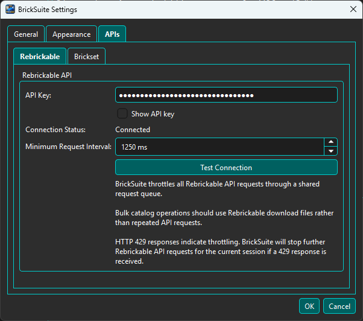

Settings contains user preferences that control how BrickSuite starts, appears, and connects to supported external data providers. These preferences persist between application sessions.
Settings are separate from the BrickSuite database content that represents your workshop.
BrickSuite Database Workspaces, Storage, Inventory, History Builds, Requirements, Allocations Application Settings Startup preferences Appearance API provider configuration

The General page contains application-wide preferences, including the Default Workspace. The Default Workspace determines which Workspace BrickSuite selects automatically when the application starts. When only one Workspace exists, BrickSuite can select it automatically.

The Appearance page controls BrickSuite's visual theme. Theme changes are applied immediately so you can evaluate the result while the Settings dialog is open. If you cancel the dialog, BrickSuite restores the previous theme.
The selected theme is retained for future BrickSuite sessions. Theme selection affects only the application's presentation; it does not alter Storage, inventory, Builds, or other workshop data. Most screenshots in this Help system use Dark theme, so colors may differ when another theme is selected.

The APIs page contains provider-specific configuration for Rebrickable and Brickset. Each provider has its own sub-tab, credentials, connection status, and connection test.
After a provider has been configured and successfully tested, BrickSuite can validate the saved connection again in later sessions. Provider status is displayed directly on its API settings page.

Enter your Rebrickable API key and choose Test Connection. When the test succeeds, Connection Status shows Connected.
Minimum Request Interval controls the minimum spacing between Rebrickable API requests. BrickSuite sends Rebrickable requests through a shared request queue to reduce the risk of exceeding provider request limits.
If Rebrickable returns HTTP 429 (Too Many Requests), BrickSuite stops further Rebrickable API requests for the current session rather than continuing to issue requests against a throttled connection.

Enter your Brickset API key and choose Test Connection. When the test succeeds, Connection Status shows Connected.
The Brickset page also displays Today's Usage and a configurable Daily Request Threshold. The threshold lets BrickSuite stop using Brickset for normal enrichment before reaching the provider's daily request allowance.
When Brickset is connected and is within the configured threshold, supported Set Details workflows can use Brickset enrichment. This can provide additional information such as theme and subtheme data, availability, ratings, instruction information, additional-image counts, and a provider link.
If Brickset is unavailable or the configured daily threshold has been reached, supported workflows can fall back to Rebrickable. BrickSuite identifies the active provider in the Set Details dialog so you can see which source supplied the information.
See Sets Catalog for the Set Details workflow.
API configuration and CSV imports serve different purposes. API connections provide provider-backed lookups and enrichment. Bulk reference-data operations use downloaded CSV files, and owned-parts or MOC CSV files are handled by their respective import workflows.
See Quick Start, Rebrickable Import, MOCs, and Sets Catalog for those workflows.
Choose OK to keep Settings changes and close the dialog. Choose Cancel to close without keeping changes that have not already been committed by the applicable setting behavior. Saved preferences are retained for future BrickSuite sessions.
Press F1 while the Settings dialog has focus to open this Settings Help topic. This provides contextual Help without closing Settings and navigating through Help Contents.
Application preferences and database content are separate concepts. Database Backup / Restore protects the BrickSuite database. See Backup / Restore.
Quick Start | Sets Catalog | Backup / Restore | Application Log | Troubleshooting